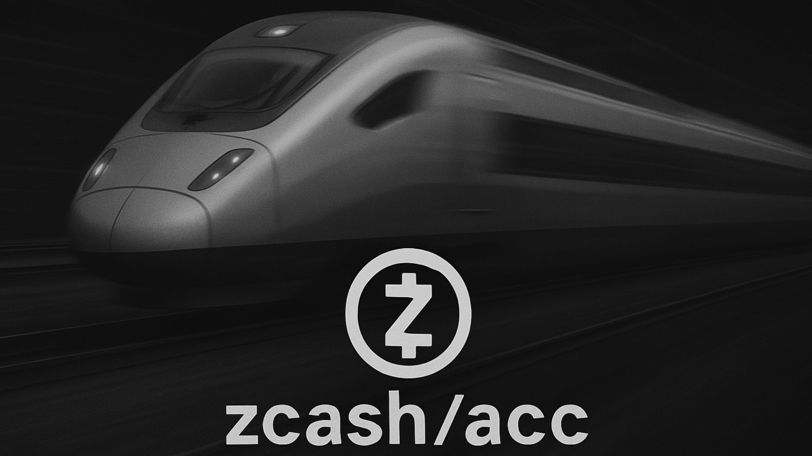

Accelerate Zcash: Let’s Deliver A Smaller Network Upgrade Sooner

Zcash needs to ship protocol upgrades faster and more frequently. NU7 has been delayed for far too long, with shifting timelines, expanding scope, and growing dependencies slowing progress. This is not an engineering problem. It’s a project management problem that requires coordination and scope control to get the upgrade out the door.
In this post, I make the case for Shielded Labs to accelerate a smaller version of NU7 that can be delivered sooner and includes the Network Sustainability Mechanism (NSM), Explicit Fees, and front-loads the required transaction format changes for all proposed features. I also explain why we believe NU7 should be accelerated, outline how Shielded Labs plans to put this proposal into action, and give the community a direct role in the decision.
The goal is to keep development on track, deliver results to users faster, and establish a more regular upgrade schedule going forward. Waiting for every feature to be ready risks delaying the release until it is no longer relevant, or not shipping anything at all. Now is the time to focus on what can be delivered, release it, and build momentum for what comes next.
The train can’t leave the station
Imagine a train getting ready to leave the station. Before it can depart, the engine needs a major repair to make the trip possible. The repair takes longer than expected, and while the work is underway, more passengers show up with extra luggage. Each new bag must be loaded, arranged, and secured, which causes even more delays. Eventually, there’s so much baggage and so many passengers that the original train can’t handle the load, and you need a bigger train and a new departure date to accommodate it.
Zcashd deprecation and NU7 have unfolded in a similar way. Zcashd deprecation has faced multiple delays. It was originally expected to be complete well before April 2025, but now may not be finished until some time next year. Because certain NU7 candidates are dependent on zcashd deprecation, NU7 has also experienced repeated delays. Engineering teams have constantly given “optimistic timelines” that have slipped from early 2025 to mid-year, then late 2025, then the first quarter of 2026, and now the end of the second quarter, with no certainty that delays will not continue.
In the meantime, there has been significant scope creep. The original NU7 candidates were decided in late 2024. However, new candidates have since been introduced with virtually no community discussion, including ongoing lockbox disbursement, key rotation for consensus keys, and changes necessary for quantum resilience. Even when scope changes are simple from an engineering perspective, they carry high communication, coordination, and governance costs, especially when plans change. NU7 is now far larger and more complex than originally planned, and the more that is added, the harder it will be to deliver as each feature needs to be integrated, tested, and audited.
At some point, you have to decide it’s time to go or the train will never leave the station.
Let’s ship a smaller network upgrade sooner
One of the outcomes of the Z|ECC Summit in Prague was a proposal for a new network upgrade process. In a post last month, Josh described a model where each party developing a protocol change would be responsible for its entire lifecycle, including development, testing, auditing, coordination with third parties, and delivering product to users. The goal is to reduce bottlenecks, maintain upgrade schedules, and allow independent features to move forward without delaying other work. While Josh suggested introducing this model after NU7 is activated, the current situation makes it clear that we need to rip the band-aid off now. Adopting it immediately is our best chance of speeding up progress and delivering some NU7 features to users sooner.
Shielded Labs is interested in accelerating a smaller version of NU7 that can be shipped sooner, focused on certain features that are not blocked by zcashd deprecation. We plan to include the Network Sustainability Mechanism (NSM) and Explicit Fees, along with front-loading all required transaction format changes for the current NU7 candidates. Front-loading these changes reduces the number of transaction format updates needed in the future, making it easier to release those features in later network upgrades. We will take full responsibility for the entire upgrade lifecycle, including implementation in both zcashd and zebrad, integration testing, auditing, and coordination with external partners. This includes working with external partners on any needed package name changes if zcashd and zebrad use different names, which would reduce codebase confusion but require extra coordination.
We believe this smaller network upgrade can be delivered without slowing progress on zcashd deprecation or delaying ZSA activation. By taking on this work, we can lighten the load on the core engineering teams and allow them to stay focused on their highest priorities. Even if our effort does not succeed in full, the work completed would still contribute to the broader NU7 effort. It would also provide an opportunity to test out ECC’s proposed network upgrade process and evaluate how it works in practice.
Why the NSM? Why not ZSAs?
The NSM modifies the current issuance mechanism so that ZEC can be removed from circulation and later recycled into future block rewards. It addresses a concern raised in the Bitcoin community that transaction fees may not generate enough miner revenue to maintain network security once block subsidies decline. Many in the Zcash community see value in tackling this issue early, especially given ongoing debates about Bitcoin’s security budget. Of course, activating the NSM a few months earlier than planned would not significantly impact network sustainability, but it would allow us to move faster on NU7 and deliver this feature to users sooner.
We recognize that ZSAs are a higher priority for most users. However, there is no zcashd implementation for ZSAs and developing one would require substantial work. Zcashd deprecation is the main bottleneck for ZSAs, and ZSAs also require further work to be integrated into Zebra. The NSM, on the other hand, already has a zcashd implementation, which we developed because we anticipated there would be delays with deprecating zcashd. Shielded Labs is well suited to deliver the NSM because it is our project, and our team has the best understanding of what is needed to integrate it into the protocol. As stated earlier, we believe this smaller network upgrade can be completed without affecting progress on zcashd deprecation or delaying ZSA activation.
Next Steps
We want to hear your feedback! We believe the decision to include the NSM, Explicit Fees, and all transaction format changes in the next network upgrade should be made by the community and coinholders, not by the core organizations or engineering teams. To that end, we plan to poll coinholders next month.
There is currently a registration period for an upcoming coinholder poll on the NU6.1 Coinholder Grants Program, where coinholders will decide whether it should become a retroactive grants program. After that poll, we will hold a separate poll that uses the same registration period to avoid requiring coinholders to move their ZEC into Orchard again just to participate. So, if you want to weigh in on this topic, but didn’t plan to participate in the poll about the retroactive grants program, you need to register your coins by August 21.
In our poll, we will ask (1) whether coinholders support including the NSM in the protocol, (2) whether they support our plan to deliver a smaller NU7, and (3) as a bonus question, whether they intend to stake their ZEC when Crosslink activates late next year. We encourage ECC and the Zcash Foundation to poll ZAC and ZCAP on these questions as well.
Conclusion
NU7 has been delayed for far too long. We need to move faster to get features into the hands of users. A smaller network upgrade is needed to keep development moving and deliver results sooner. Once we accelerate NU7, we must get on a regular network upgrade schedule so that features are shipped into the protocol as soon as they are ready.
Let’s get some of the passengers onto a smaller train so it can leave the station, rather than keeping everyone waiting. Then we can focus on making sure future trains run on time and that the schedule stays on track.
______________________________________________________________
Thanks to Zooko for his insights on this topic and for framing the train analogy used here. Also, thank you to Nate, Kris, and Arya for their helpful comments and feedback on this proposal and the network upgrade process.